Şimdiye kadar çizilenler
Bugüne kadar çizdiğimiz resimler burada, kategorilere ayrılmış: yaratıklar, patronlar, bölgeler, askerler ve filmlerin kareleri. Merak edenler için; oynamak için bakmak gerekmez.
Her resmin altında ne olduğu yazıyor. Konsept çizim, yazdığımız bir tariften yapay zekâ ile çizildi; oyundan alınmış görüntü değil. Film karesi, oyunun kendi oynattığı bir filmden bir kare; filmlerin resimleri de yapay zekâ ile çizildi. Büyütmek için resme tıkla.
Alpha.4'te ne var, ne yok. İndirdiğin alpha.4'te sürünenler, uçan tükürücüler ve beşinci dalgada bir boss var, eski modelleriyle. Yeni kara derili aile, uçanların yeni modeli, Gharial'ın küllerden çıkışı ve yaratıkların ölümü (vurulan düşer, patlamayla yanan kömürleşip küle döner) geliştirme sürümünde var, henüz alpha'da yok; sonraki bir alpha'yla gelecek. Gharial'ı daha uzun bacaklı yeniden yapıyoruz, çizimdeki hâli değişebilir. Bölgeye göre renkler, diğer dört boss, tırmanışın yaratıkları ve Kül Kraliçesi henüz yapılmadı.
Çizimlerdeki sayılar (bacak, göz, kese) tasarımla tutmayabilir; bu yüzden altyazılarda sayı vermedik.
Dünya ve Sunline (3)
Ufku baştan başa saran ateş ve gökte ona ışın indiren ayna halkası.
Güneş Çizgisinin ateş duvarı için çizilmiş üç referans. Gerçekçi bir çizim tarzı: oyunun blok görünümü bu değil.
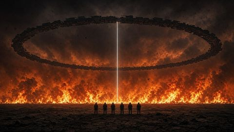
Halka ve ışın
The mirror ring and its beam over the line of fire
Konsept çizim · yapay zekâ ile çizildi
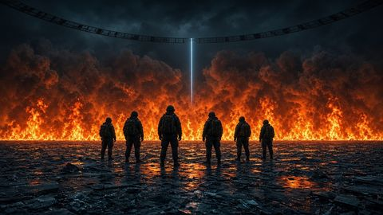
Geriye bakış
Looking back at the wall of fire
Konsept çizim · yapay zekâ ile çizildi
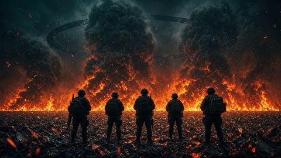
Duman sütunları
Smoke columns above the wall of fire
Konsept çizim · yapay zekâ ile çizildi


Askerler ve madenciler (5)
Ekip ve madenciler: kim nasıl giyiniyor, nasıl görünüyor.
Lego ve Minecraft çizimleri iki görünüm arasında seçim yapmak için çizilmişti; oyunda ikisi de var (koşuda F10). Çizimler oyundaki modellerin birebir hâli değil.
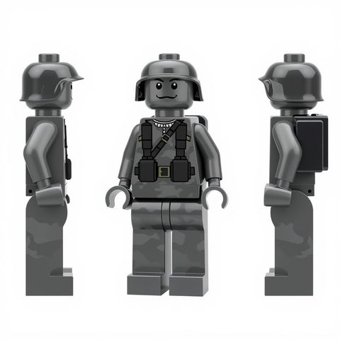
Lego görünümünde asker
Soldier concept, Lego look
Konsept çizim · yapay zekâ ile çizildi
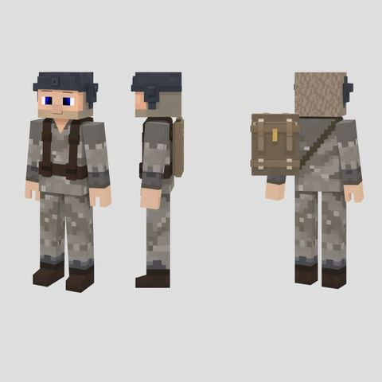
Minecraft görünümünde asker
Soldier concept, Minecraft look
Konsept çizim · yapay zekâ ile çizildi
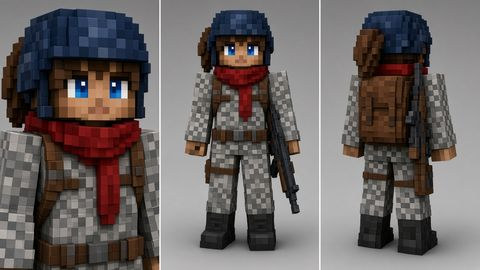
Komutan Vance
Captain Vance, character sheet
Konsept çizim · yapay zekâ ile çizildi
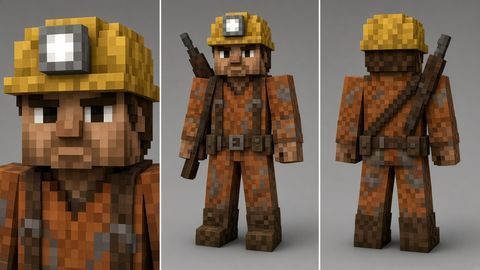
Madenci
Miner, character sheet
Konsept çizim · yapay zekâ ile çizildi
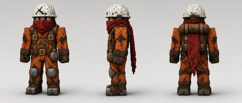
Kırmızı atkılı madenci
Miner with a white hard hat and a red scarf
Konsept çizim · yapay zekâ ile çizildi


Duskborn yaratıkları (11)
Gün boyu külün altında uyuyanlar. Alacakaranlıkta çatlaklardan çıkarlar.
Lego ve Minecraft görünümlü çizimler erken konseptlerdir. Diğerleri sonradan çizildi; sürünen ve uçanın yeni modelleri geliştirme sürümünde var, alpha.4'te yok.
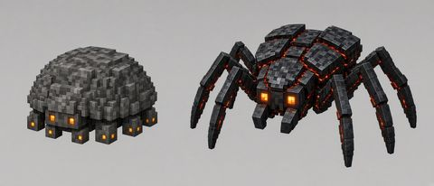
Aynı canlı, önce ve sonra
The same animal before and after: harmless, then Duskborn
Konsept çizim · yapay zekâ ile çizildi
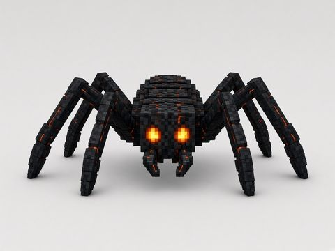
Sürünen, önden
The crawler, front view
Konsept çizim · yapay zekâ ile çizildi
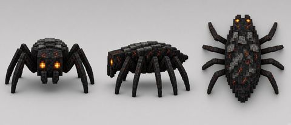
Sürünen, üç görünüş
The crawler: front, side and top
Konsept çizim · yapay zekâ ile çizildi
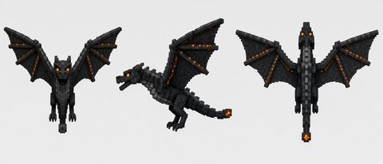
Uçan, üç görünüş
The flyer: front, side and top
Konsept çizim · yapay zekâ ile çizildi
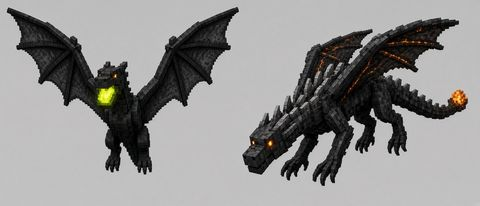
Uçan, havada ve dalışta
The flyer hovering, and in a dive
Konsept çizim · yapay zekâ ile çizildi
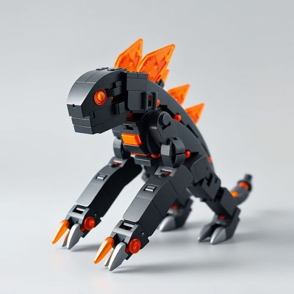
Lego görünümünde sürünen
Early crawler concept, Lego look
Konsept çizim · yapay zekâ ile çizildi
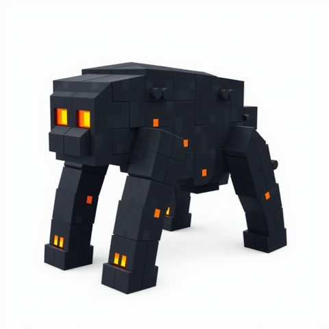
Minecraft görünümünde sürünen
Early crawler concept, Minecraft look
Konsept çizim · yapay zekâ ile çizildi
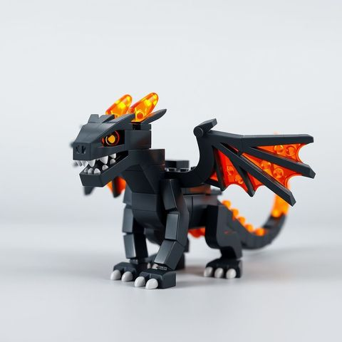
Lego görünümünde kanatlı
Early flyer concept, Lego look
Konsept çizim · yapay zekâ ile çizildi
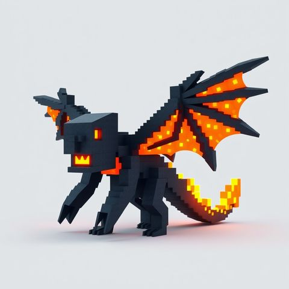
Minecraft görünümünde kanatlı
Early flyer concept, Minecraft look
Konsept çizim · yapay zekâ ile çizildi
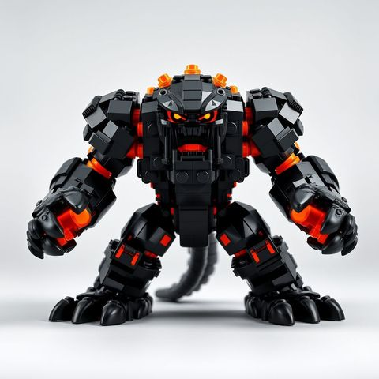
Lego görünümünde iri yaratık
Early brute concept, Lego look
Konsept çizim · yapay zekâ ile çizildi
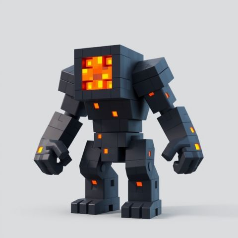
Minecraft görünümünde iri yaratık
Early brute concept, Minecraft look
Konsept çizim · yapay zekâ ile çizildi


Patronlar (6)
Her kulenin beşinci dalgasında bir dev gelir.
Gharial geliştirme sürümünde var, alpha.4'te boss'un eski modeli var. Diğer dört boss henüz yapılmadı.
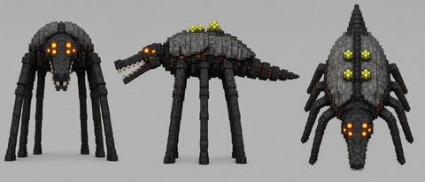
Gharial, birinci kule
The Gharial, tower 1, Ashfall. Concept: being rebuilt taller.
Konsept çizim · yapay zekâ ile çizildi
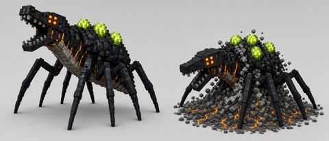
Gharial, külden çıkıyor
The Gharial rearing up, and digging itself out of the ash. Concept.
Konsept çizim · yapay zekâ ile çizildi
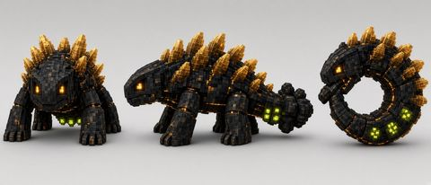
Shardback, ikinci kule
Shardback, tower 2, Glasswind. Concept.
Konsept çizim · yapay zekâ ile çizildi
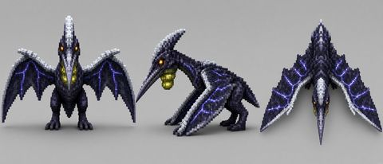
Stormroc, üçüncü kule
Stormroc, tower 3, Stormspire. Concept.
Konsept çizim · yapay zekâ ile çizildi
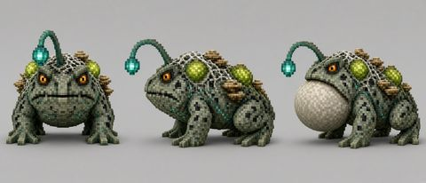
Gloomcaller, dördüncü kule
Gloomcaller, tower 4, Sporeroot. Concept.
Konsept çizim · yapay zekâ ile çizildi
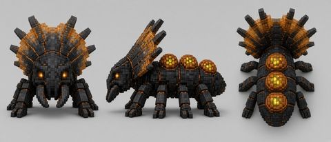
Brood Champion, beşinci kule
The Brood Champion, tower 5, Hivegate. Concept.
Konsept çizim · yapay zekâ ile çizildi


Bölgeye göre görünüm (5)
Çizimde Duskborn'lar her bölgede başka görünür. Ashfall'da derileri kara camdır, sırtlarında kül plakaları taşırlar. Glasswind'de rüzgârın taşıdığı kum derilerini aşındırır; sırtlarındaki cam pullar günün sıcağını gece boyunca tutar. Sporeroot'ta mantar sarmıştır, sisten soluk çıkarlar. Gözleri her yerde aynı kare kehribardır. Asit keselerinin yeşili de değişmez: tükürmeden önce o yeşil şişer ve yanar.
Konsept. Bölgeye göre renkler henüz yapılmadı.
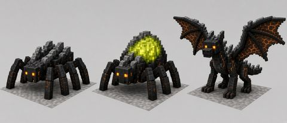
Kule 1, Ashfall
The Duskborn of Ashfall: the same family in that region's colours. Concept.
Konsept çizim · yapay zekâ ile çizildi
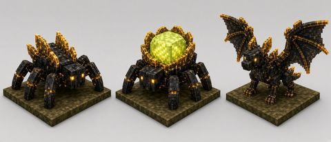
Kule 2, Glasswind
The Duskborn of Glasswind: the same family in that region's colours. Concept.
Konsept çizim · yapay zekâ ile çizildi
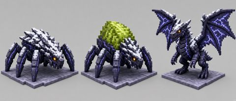
Kule 3, Stormspire
The Duskborn of Stormspire: the same family in that region's colours. Concept.
Konsept çizim · yapay zekâ ile çizildi
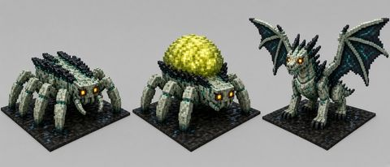
Kule 4, Sporeroot
The Duskborn of Sporeroot: the same family in that region's colours. Concept; the pale skin is still a proposal.
Konsept çizim · yapay zekâ ile çizildi
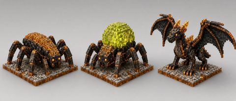
Kule 5, Hivegate
The Duskborn of Hivegate: the same family in that region's colours. Concept.
Konsept çizim · yapay zekâ ile çizildi


Helion tırmanışı ve kraliçe (5)
Beşinci kulenin ardında Helion duvarı yükselir. Mağaralarında ağızlar bekler, tavanlarında Stormroc'un yavruları. En tepede, Ark'ın rampasının önünde, Kül Kraliçesi yatıyor.
Konsept. Henüz yapılmadı: alpha Helion duvarının kapısında bitiyor.
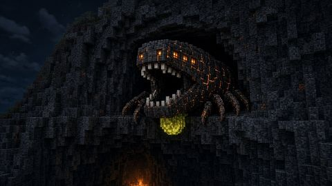
Cavemaw
The Cavemaw, the Helion wall. Concept.
Konsept çizim · yapay zekâ ile çizildi
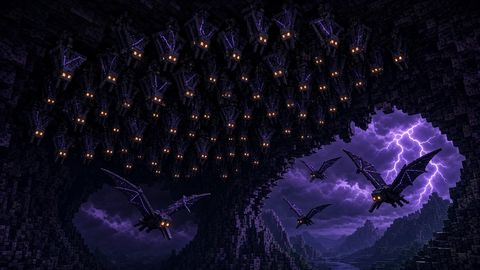
Craglings
The Craglings, the Helion wall. Concept.
Konsept çizim · yapay zekâ ile çizildi
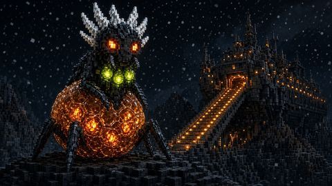
Kül Kraliçesi
The Cinder Queen, in front of the Ark. Concept.
Konsept çizim · yapay zekâ ile çizildi
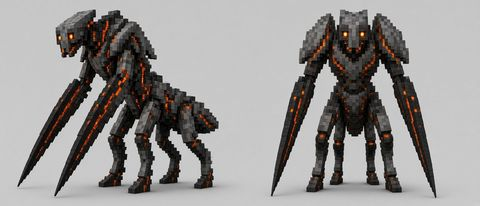
Ashlancer
An Ashlancer, one of the Queen's guards. Concept.
Konsept çizim · yapay zekâ ile çizildi
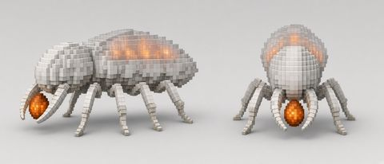
Broodtender
A Broodtender, who carries the Queen's eggs. Concept.
Konsept çizim · yapay zekâ ile çizildi


Tarihçe (13)
Pyrelle'in öyküsü: giriş filmi ve hikâyenin başlangıcı.
İlk sekiz resim oyunun giriş filminin kareleri. Sonraki beş resim yalnızca 'Hikâyenin başlangıcı' sayfası için çizildi; oyunda oynayan bir film değil.
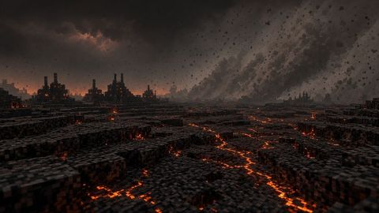
Çatlayan, kül kaplı zemin
The cracked, ash-covered ground
Film karesi · oyunun filminden
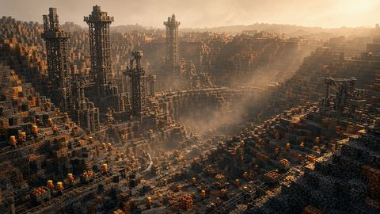
Maden kenti ve kuleler
The mining town and its towers
Film karesi · oyunun filminden
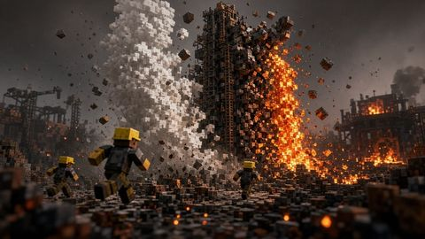
Patlayan zemin
The ground bursts
Film karesi · oyunun filminden
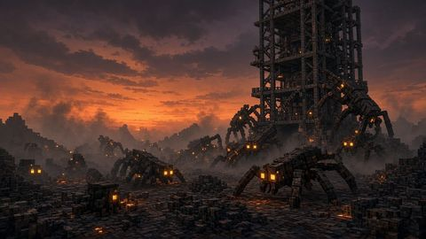
Kule ve sürünenler
The tower and the crawlers
Film karesi · oyunun filminden
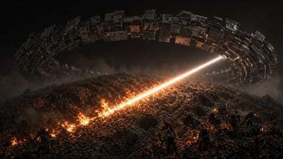
Yörüngeden yüzeye ışın
A beam from orbit to the surface
Film karesi · oyunun filminden
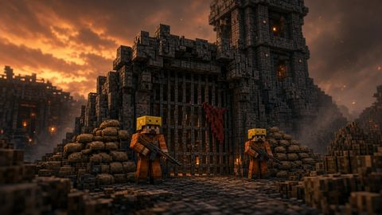
Kapıdaki madenciler
Miners at a tower gate
Film karesi · oyunun filminden
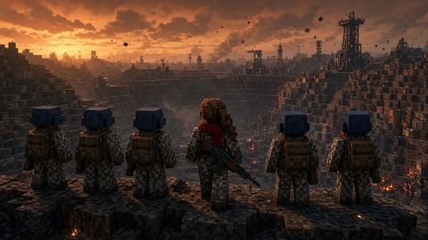
Vadiye bakan ekip
The squad looks over the mining valley
Film karesi · oyunun filminden
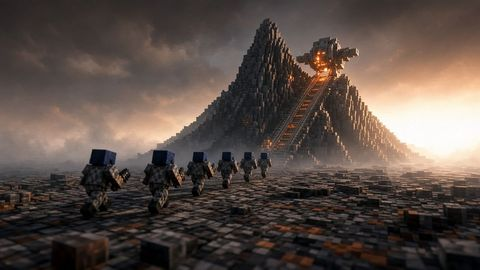
Helion Dağı ve tepesindeki Ark
Mount Helion and the Ark on its peak
Film karesi · oyunun filminden
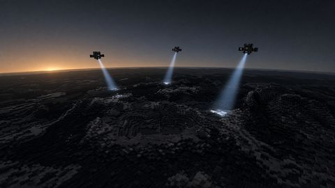
Yörüngedeki sondalar yüzeyi tarıyor
Probes scan the surface from orbit
Konsept çizim · yapay zekâ ile çizildi
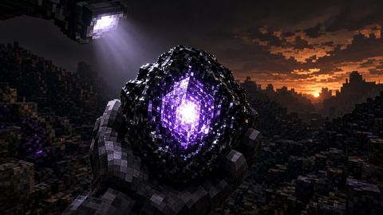
Kara camın altındaki kristal
The crystal found under the black glass
Konsept çizim · yapay zekâ ile çizildi
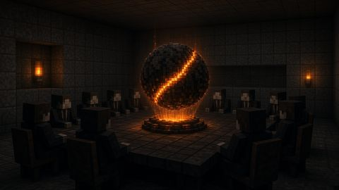
Karar gezegenden uzakta verildi
The decision was made far from the planet
Konsept çizim · yapay zekâ ile çizildi
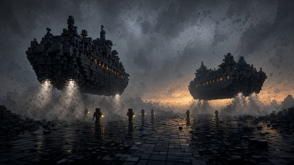
İlk gemiler ovaya iniyor
The first ships land on the plain
Konsept çizim · yapay zekâ ile çizildi
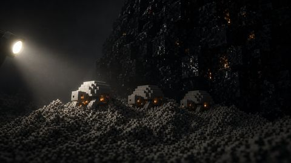
Külün altındaki küçük canlılar
Small creatures under the ash
Konsept çizim · yapay zekâ ile çizildi


Kalkış, kuşatma ve göç (14)
Çıkış, kuşatma ve yürüyüş filmlerinden kareler.
Üç filmden kareler: çıkış, kuşatma, yürüyüş.
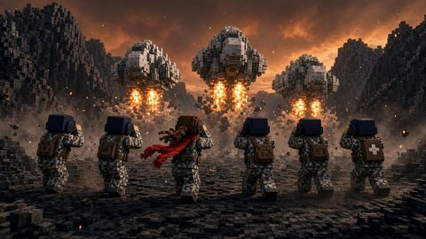
Gemiler kalkarken
The ships lift off
Film karesi · oyunun filminden
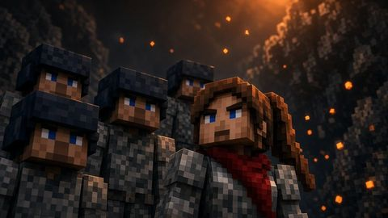
Ekip, yakın plan
The squad, close up
Film karesi · oyunun filminden
Giden gemiler
The ships climb away
Film karesi · oyunun filminden
Vadiye doğru
Into the valley
Film karesi · oyunun filminden
Sığınağa koşu
Running for the bunker as the dawn line arrives
Film karesi · oyunun filminden
Su, başlardan aşağı
Water over their heads before the line passes
Film karesi · oyunun filminden
Sığınakta bekleyiş
Waiting inside the bunker
Film karesi · oyunun filminden
Parlayan kapı
Crouching before the glowing door
Film karesi · oyunun filminden
Çizgi geçti
The line has passed
Film karesi · oyunun filminden
Gün ağarırken sığınak
The bunker at first grey
Film karesi · oyunun filminden
Komutan ve ustabaşı
The captain and the foreman
Film karesi · oyunun filminden
Ustabaşı ve madenciler
The foreman among the miners
Film karesi · oyunun filminden
Komutanın yüzü
The captain's face
Film karesi · oyunun filminden
Sıradaki kuleye doğru
On the march to the next tower
Film karesi · oyunun filminden